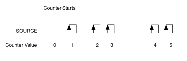
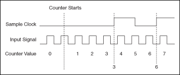

Edge counting is when a device counts rising or falling edges using a counter channel. You can choose to do either single point or buffered sample clock edge counting.
The following illustration shows an example of edge counting in which the counter in a device counts five edges on the input terminal.

With buffered edge counting, the device latches the number of edges counted onto each active edge of the sample clock and stores the number in the buffer. There is no built-in clock for buffered edge counting, so you must supply an external sample clock.

Examples
Refer to the following VIs for examples of performing this measurement. You must have a driver installed to find examples for that driver.
NI-DAQmx
You can use the DAQmx - Data Acquisition VIs to perform this measurement. Find related examples:
�Counter - Count Edges
You also can use the DAQ Assistant Express VI to perform this measurement.
 �Counter - Count Edges
�Counter - Count Edges �Add�
�Add�